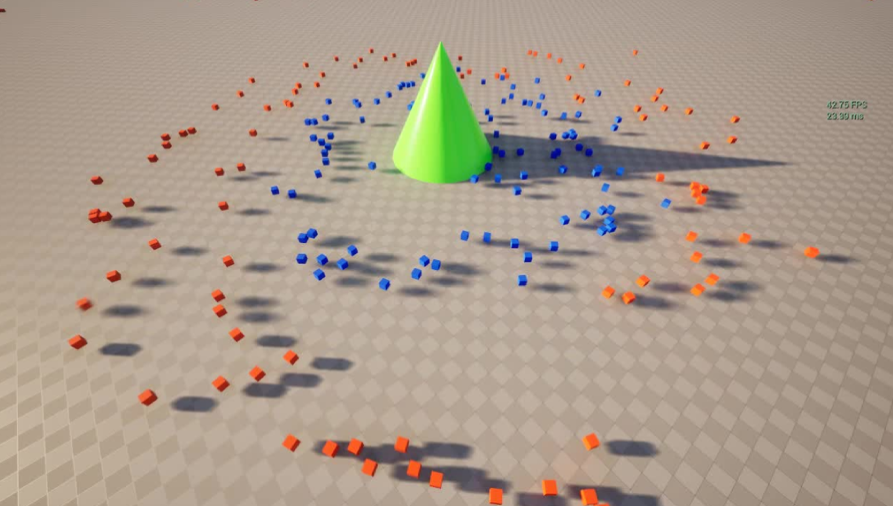

Introdoction
Overview
The Tactical Crowd AI Toolkit(TCAT) enables the creation of large-scale AI systems that make informed movement and navigation decisions using GPU-Based influence maps. Designed for performance, it scales to hundreds -- if not thousands -- of simultaneous units, making it ideal for crowd-level decision making where traditional query-based approaches struggle.
유튜브 트레일러 첨부
Why should you use our plugin “TCAT”?
TCAT은 언리얼의 전통적인 AI 시스템인 EQS보다 훨씬 빠르기 때문입니다.
아래와 같은 상황에서 성능 비교를 해보겠습니다.
성능비교 시나리오

빨강 ■ = 콘▲에 접근을 시도하는 AI
파랑 ■ = 다가오는 적■의 접근을 저지하는 AI
**성능 비교 환경**
- CPU: Intel(R) Core(TM) i7-14700(~2.1GHz)
- GPU: NVIDIA GeForce RTX 5060(8GB)
- RAM: 32GB DDR4
성능 비교: 2000명의 AI
보시다시피, AI가 매우 많아졌을 때, 시간과 메모리 사용량 측면에서 TCAT이 EQS보다 훨씬 더 성능이 뛰어다나는 것을 보실 수 있습니다.
What is a GPU-Based Influence map?
왜 EQS보다 TCAT이 더 빠를까요?
TCAT은 GPU-Based Influence map을 사용하기 때문입니다.
Influence map이란?
Influence map은 게임 공간을 2D 격자로 나누고, 각 칸에 수치를 기록한 데이터 구조입니다.
각 칸에 얼마나 높은 수치를 기록할 것인지에 대한 기준은 사용자가 정하게 됩니다.
💡각 칸에 기록되는 수치를 영향력이라고 부릅니다.
예를 들어보겠습니다.
레벨에 여러 아군 AI들이 있습니다.
사용자는 “아군 AI가 밀집된 칸일수록 높은 수치(=높은 영향력)를 기록하라”라는 기준을 정합니다.
그렇다면, Influcen map은 아래와 같이 만들어집니다.
아군 AI가 밀집된 칸일수록, 높은 수치가 기록된 것을 볼 수 있습니다.(초록색일수록 높은 수치가 기록된 칸입니다.)

이 Influence map을 이용한다면, 다음과 같은 AI 로직들을 만들 수 있게됩니다.
- 아군 AI들이 밀집된 지역을 피해서 가는 적군 AI
- 아군 AI들이 밀집된 지역으로 돌진을 하는 몬스터 AI
- 아군 AI들이 최대한 밀집된 지역에 메테오를 떨어트리는 적군 AI
- 서로 최대한 모이려고 하는 아군 AI
- 그 외 등등
즉, AI가 의사결정을 하는 데에 쓰는 전장 상황판인 것입니다.
AI는 복잡한 연산 없이, 단지 Influence map을 참조 하는 것만으로 빠른 시간안에 의사결정을 할 수 있게 됩니다.
GPU-Based Influence map이란?
지금까지는 Influence map에 대해 알아봤습니다.
그렇다면, “GPU-Based” Influence map은 뭘까요?
조금 전에, 2D 격자를 만들고, 각 칸에 수치를 기록해 Influence map을 만든다고 했습니다.
즉, 이 Influcence map은 보통 2차원 배열 형태로 저장이 됩니다.
이 배열의 모든 칸에 값을 기록하려면, 배열의 크기만큼 반복문을 순회해야 합니다.
예를 들어, 어떤 Influence map의 크기가 750 X 750이라면, 562,500번을 순회해야 하는거죠.
이것은 큰 병목이 될 수 있습니다.
그래서, TCAT은 Influece map에 값을 기록할 때, CPU가 아닌 GPU를 씁니다.
GPU는 병렬 처리에 특화돼있어, 모든 칸에 거의 동시에 값을 기록할 수 있기 때문입니다.
즉, 750X750 크기의 Influence map의 모든 칸에 값을 기록하는 것을 단 1번의 순회로 끝낼 수 있다는 것입니다.
(물론, 완벽한 1은 아닙니다만, 그래도 CPU보다 훨씬 빠르게 값을 기록할 수 있습니다.)
이렇게 TCAT은 Influence map과 GPU를 활용함으로써, 매우 빠른 AI System을 만들었습니다.
Influence map에 대한 좀 더 자세한 이론적 설명은 이 링크를 참고하세요.
Key Features
- Includes an Influence Volume and Influence Source Component to create influence maps with just a few clicks.
- Computes influence maps every tick, dynamically switching between GPU and CPU based on detected bottlenecks.
- Built-in 2.5D spatial queries including vision occlusion tests, height-aware sampling, and navigability checks.
- Supports composite operations on base influence maps, including addition, subtraction, multiplication, normalization, etc.
- Provides intuitive Blueprints and Behavior Tree Services and Tasks to asynchronously query influence maps.
- Debugging tools, Visual Logger, and Unreal Insights support
- High performance
Vidoe Tutorials
유튜브 튜토리얼들
Contact Us
유튜브 채널
그 외 등등
💡For more details, click the items in the left side bar.